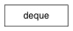

deque([iterable[, maxlen]]) –> deque object
Build an ordered collection with optimized access from its endpoints.
Add an element to the right side of the deque.
Add an element to the left side of the deque.
Remove all elements from the deque.
Extend the right side of the deque with elements from the iterable
Extend the left side of the deque with elements from the iterable
maximum size of a deque or None if unbounded
Remove and return the rightmost element.
Remove and return the leftmost element.
D.remove(value) – remove first occurrence of value.
D.reverse() – reverse IN PLACE
Rotate the deque n steps to the right (default n=1). If n is negative, rotates left.